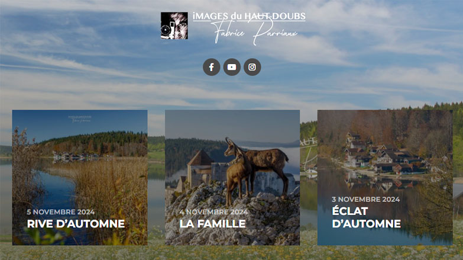
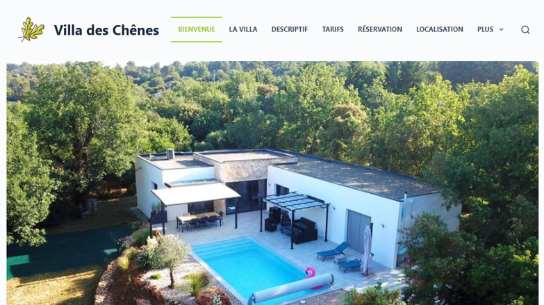
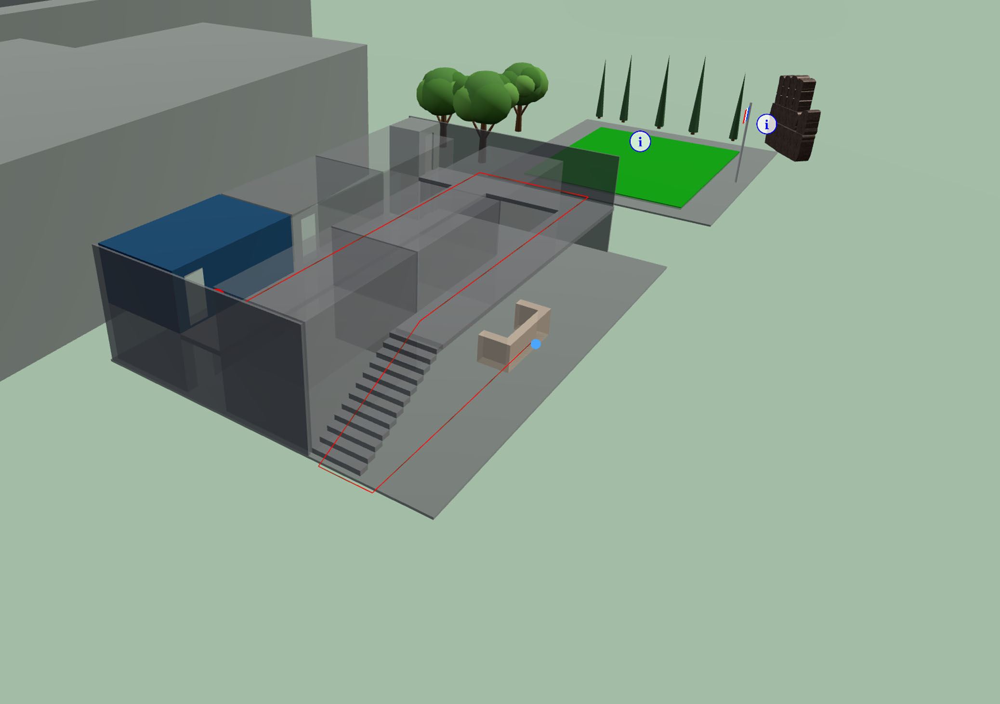
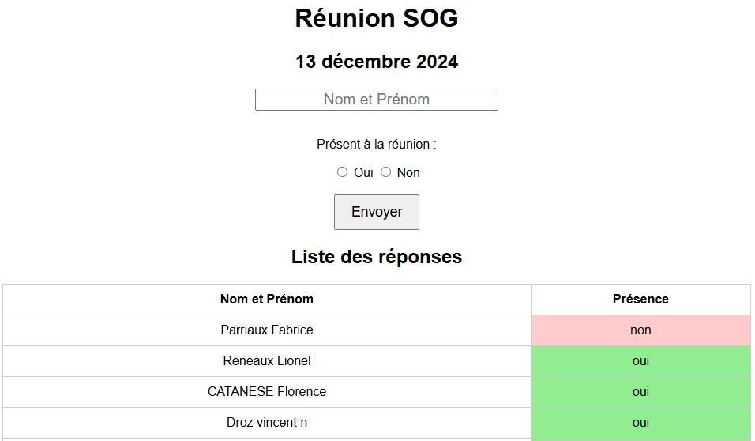
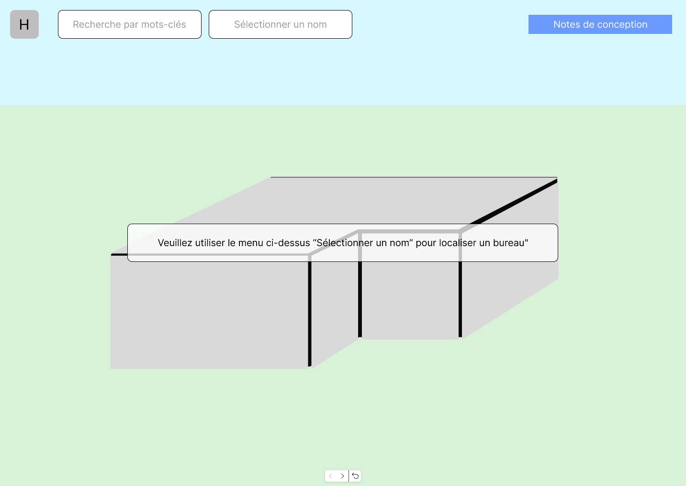

Prototype navigable, conçu en amont du développement Three.js. Utilisez les flèches ou cliquez sur les zones interactives pour naviguer entre les écrans.

Prototype réalisé avec Figma avant le développement. Si le prototype ne s'affiche pas, ouvrez-le directement sur Figma.